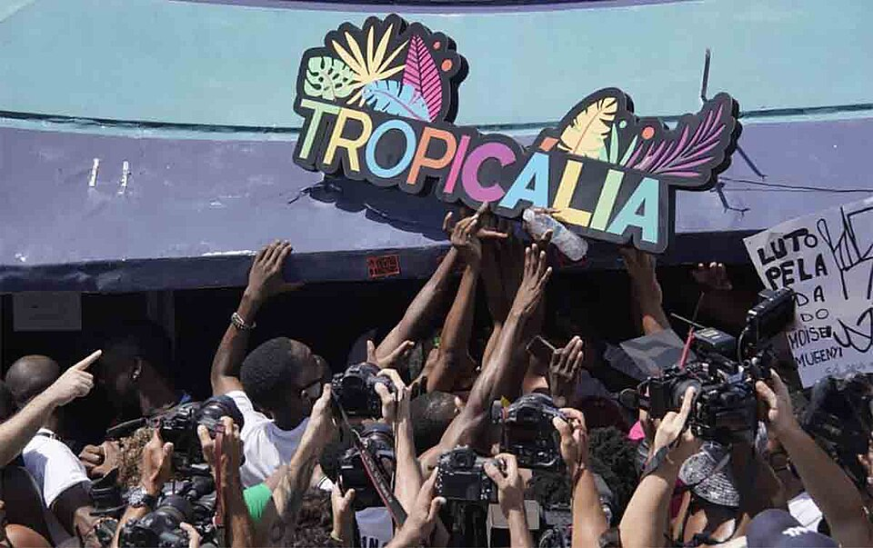

Boas-vindas a
 Quero conhecer!O que foi a Tropicália?
A Tropicália, também conhecida como Tropicalismo, foi um movimento cultural brasileiro que surgiu na segunda metade da década de 1960, marcando a música, a arte, o cinema e a literatura da época. Misturando elementos da cultura popular brasileira com influências estrangeiras, como o rock e a cultura pop, o movimento desafiou as normas culturais e políticas, incluindo a ditadura militar, e propôs uma nova estética que combinava o nacional e o global. Principais características e contexto:
Música
A Tropicália revolucionou a música popular brasileira, incorporando elementos do rock, da bossa nova, do samba e da música erudita, além de letras com forte conteúdo poético e crítico. Artistas como Caetano Veloso, Gilberto Gil e Os Mutantes foram seus principais expoentes.Artes visuais e cinema:
O movimento também influenciou as artes visuais, com a obra "Tropicália" de Hélio Oiticica, e o cinema, com a estética do Cinema Novo, que abordava questões sociais e políticas com uma linguagem inovadora.Contexto histórico:
A Tropicália surgiu em um período de forte repressão política no Brasil, com a ditadura militar, e de questionamento de valores tradicionais em todo o mundo, como o movimento hippie e as manifestações de 1968.Antropofagia cultural:
A Tropicália adotou a ideia de antropofagia cultural, propondo a "digestão" de elementos estrangeiros e a sua incorporação à cultura brasileira, criando algo novo e original.Críticaà ditadura:
Apesar de não ser um movimento explicitamente político, a Tropicália, com suas letras e obras, fazia críticas indiretas à ditadura militar e à censura imposta pelo regime.Legado
A Tropicália deixou um legado importante para a cultura brasileira, influenciando diversos artistas e movimentos posteriores, e mostrando a importância de se questionar as normas e de se buscar novas formas de expressão.Resumindo:
- O tropicalismo foi um movimento cultural brasileiro da década de 1960.
- O nome foi derivado de uma obra do artista plástico Hélio Oiticica.Seus principais representantes foram Caetano Veloso, Rita Lee, Gal Costa e Gilberto Gil.
- Procurou renovar o cenário cultural brasileiro por influência do rock, do pop e de elementos da cultura brasileira.
- Seus representantes denunciaram a realidade brasileira e usaram de alegorias para fazer denúncias e fugir da censura.
- Encerrou-se com a prisão e o exílio de Caetano Veloso e Gilberto Gil.
Veja mais sobre "Tropicalismo" em: Brasil escola, tropicalismo
Galeria